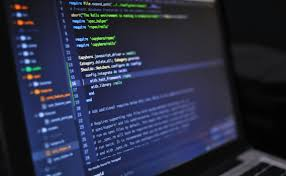

El Ingeniero en Sistemas Computacionales en Hardware es el profesional con conocimientos, actitudes, habilidades y destrezas en las áreas de sistemas informáticos y electrónicos, desarrollando sistemas integrales de innovación tecnológica multidisciplinaria, que le permiten responder a las necesidades de diversos sectores.
Conocimientos
- Conocimientos de ciencias básicas para ingeniería
- Fundamentos de algoritmos, estructuras y representación de datos para soluciones computacionales.
- Programación en lenguajes de computación en diversos paradigmas
- Metodologías y técnicas para el análisis, diseño, modelado y desarrollo de sistemas informáticos y electrónicos.
- Bases de datos.
- Fundamentos de redes, protocolos de redes y esquemas de seguridad para garantizar interconexiones entre equipos o sistemas y sus comunicaciones de manera confiable.
- Sistemas Operativos y diferentes plataformas tecnológicas.
- Gestión para la realización de proyectos profesionales.

Habilidades
Desarrollo de sistemas computacionales para solucionar distintos problemas usando tecnologías de vanguardia en su aplicación, integrando hardware y software.
Desarrollar sistemas computacionales para la óptima interacción hombre-máquina y máquina-máquina.
Diseño de bases de datos, relacionales y distribuidas, para la gestión y seguridad de los datos.
Configuración y uso de conexiones de redes de computadoras entre equipos, sus sistemas operativos y recursos electrónicos.
Aplica diversas arquitecturas de computadoras, para implementar soluciones integrales en sistemas computacionales.
Aplica matemáticas avanzadas para el análisis de señales y sistemas en el dominio del tiempo y la frecuencia.
Desarrolla proyectos en el ámbito de la ingeniería eléctrica y electrónica para la integración de soluciones.
Actitudes y valores
- Respeto
- Espíritu de servicio
- Liderazgo
- Compromiso
- Disciplina
- Honestidad
- Competitividad
- Interés por la actualización permanente
- Ética profesional
- Creatividad e Innovación
- Pensamiento crítico y analítico
- Confidencialidad en su desempeño
- Sensibilidad a la preservación del medio ambiente
- Trabajo en equipo
- Responsabilidad Social
Campo laboral
Ingeniería de software
- Base de datos comunicacionales, redes y seguridad
Ingeniería de hardware
- Automatización de procesos que involucran el diseño de hardware-software
Aplicaciones y servicios con dispositivos hardware-software
- Investigación y desarrollo tecnológico
- Sistemas Embebidos Sistemas y Diseño Electrónico.
Posibles trabajos
- Ingeniería de software, bases de datos, inteligencia de negocios, comunicaciones, redes, seguridad e ingeniería de hardware.
- Automatización de procesos que involucren el diseño de hardware – software, aplicaciones y servicios con servicios móviles y computación gráfica.
- Diseño y construcción de software educativo y de software de entretenimiento.
Investigación y desarrollo tecnológico y sistemas inteligentes.